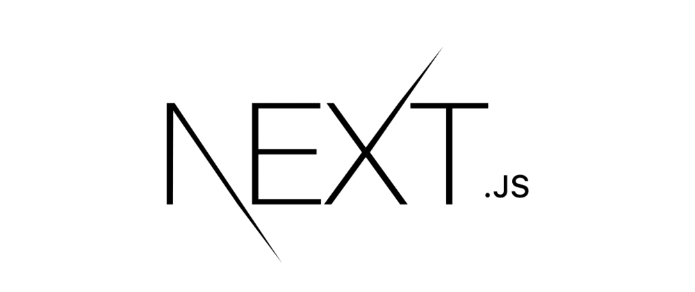

Building A Real App #13
Follow along with my journey to build a real app

Designing Real-Time “Unread” Notifications
As I continue to build, I want to make sure I have key features that are needed, and the next one is
having a visual notification system for users to know if there is an update in their assignments,
especially since they can have hundreds and a user won't realistically look through all of them for an
update.
How it should work for my website:
- Consultants create or give feedback on an assignment
- Students see the notification on their dashboard and submit their update
- Consultants see their own notification it has been updated
I've started practicing a bit about how to design functions on paper first before implementing. Initially, I definitely got the system design aspect wrong, but it was a good learning experience.
My System Design
What I wanted:
- A small dot on assignments when something is new
- The dot disappears when the user views it
- Notifications should bubble up to folders
- Future Feature: emails / push notifications
- who updated something
- who has seen it
- when it happened
- how to scale this across users
My First Attempt
Initially, I thought I could just store something like in the assignment schema:
lastUpdatedBy: "consultant"
seenByOtherRole: false
- If consultant updates → student sees dot
- If student views → seenByOtherRole = true
Why this fails
After writing out my idea more, I asked AI to review it and give feedback. Turns out, it works for
a basic system but breaks in real-world scenarios:
Problem 1: Not scalable to multiple users and no per-user tracking
What if:- multiple consultants are assigned to a student?
- admins exist?
- Which consultant has seen this?
- Who hasn't?
Problem 2: No analytics
Having these records on the assignment stops us from easily computing:- unread counts
- engagement
- activity timelines
The Better Approach: Timestamps + User IDs
After researching and sanity-checking with multiple AI tools, I switched to adding this assignment metadata onto the user schema instead. Now, we see this in the subcollection:
assignmentId:
{
lastActivityAt: Timestamp
lastActivityById: Timestamp
hasRead: boolean
}
However, a slightly complicated part comes up now. I need this hasRead value in the backend for the purposes of data analytics for users. However, in the frontend, this needs to still be attached to an assignment so that I can properly render the dot notification. So, in the frontend for my redux state, I add this hasRead field to my assignments. Remember, hasRead is connected to assignmentIds in the subcollection, so it's just a matter of connecting the hasRead to their respective assignments.
Here is my thunk action that does this:
export const fetchAssignments = createAsyncThunk(
"currentStudentAssignments/fetchAssignments",
async (assignmentsDocIds: string[], {rejectWithValue, getState}) => {
try {
const state = getState() as RootState;
const assignmentsMetaData = state.user.assignmentsMetaData
// Fetch all assignments in parallel
const assignments = await Promise.all(
assignmentsDocIds.map(async (assignmentDocId) => {
// Get a reference to the assignment document and fetch its snapshot
const assignmentRef = doc(db, "assignments", assignmentDocId);
const assignmentSnapshot = await getDoc(assignmentRef);
if (!assignmentSnapshot.exists()) {
throw new Error(`Assignment with ID ${assignmentDocId} not found`);
}
// Extract data from the snapshot
const assignmentData = assignmentSnapshot.data();
// const assignmentMetaData = assignmentsMetaData.find((meta) => meta.id === assignmentDocId)
const assignmentMetaData = assignmentsMetaData[assignmentDocId]
// Ensure all required Assignment fields are present
return {
id: assignmentDocId,
...assignmentData,
hasRead: assignmentMetaData?.hasRead
} as Assignment;
})
);
return assignments;
} catch (error) {
return rejectWithValue((error as Error).message);
}
}
);
{!assignment.hasRead && ...}
const hasUnread = assignments.some((assignment) => !assignment.hasRead)
Handling Updates For Assignments
I have to make sure updates to an assignment now also continue with the logic that we've implemented
in the database and frontend.
I've had to adjust my uploadEntry a bit. I needed a way to make sure that I was always correctly
updating with one user and then updating it the opposite way with the other user. I figured I could
set isConsultant to check if the user is a consultant. This gives us both sides of what we need.
await countOfAssignmentsNotFinished()
await nextAssignmentDue()
export const uploadEntry = async (entryData: Entry, assignmentDocId: string, consultantId: string, studentId: string, userId: string) => {
try {
await updateDoc(doc(db, "assignments", assignmentDocId), {
timeline: arrayUnion(entryData)
})
const isConsultant = userId === consultantId
await updateDoc(doc(db, "consultantUsers", consultantId, "assignmentMeta", assignmentDocId), {
hasRead: isConsultant,
lastActivityAt: Timestamp.now(),
lastSeenAt: Timestamp.now()
})
await updateDoc(doc(db, "studentUsers", studentId, "assignmentMeta", assignmentDocId), {
hasRead: !isConsultant,
lastActivityAt: Timestamp.now(),
lastSeenAt: Timestamp.now()
})
} catch (error) {
console.log("Error updating assignment in uploadEntry", error)
throw error
}
}
const handleAssignmentClick = async (assignment) => {
setIsModalOpen(true)
dispatch(setCurrentAssignment(assignment))
await readAssignment(assignment.id, "consultantUsers", user.id)
dispatch(readAssignmentSlice(assignment.id))
dispatch(readAssignmentUserSlice(assignment.id))
}
Lessons Learned
- Use timestamps to get more accurate data on when something is being updated.
- Simply using boolean flags for state like “read/unread” doesn't work, we need to at least connect it to a userId.
- Think in terms of queries What kind of queries do we want to perform, design data that let's us easiest grab that data.
- Design for future features early.
What's Next
I've done a lot of stuff for the app, but I think it's time to step back and refactor things as a whole. Can any files be sorted better, or cut down? I need to make sure I don't build too much and get lost.